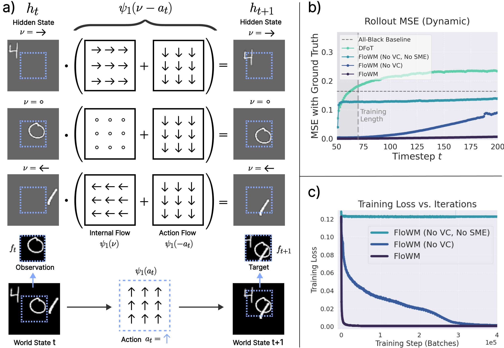
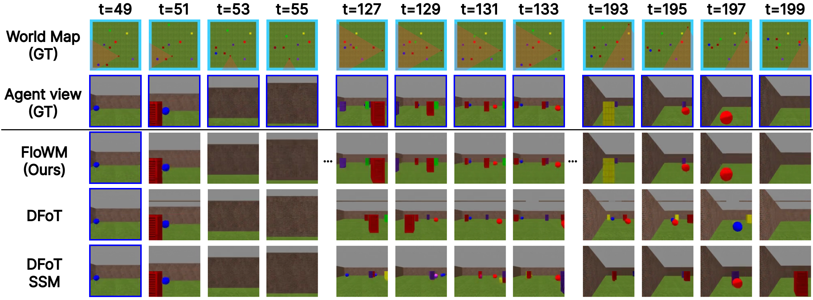
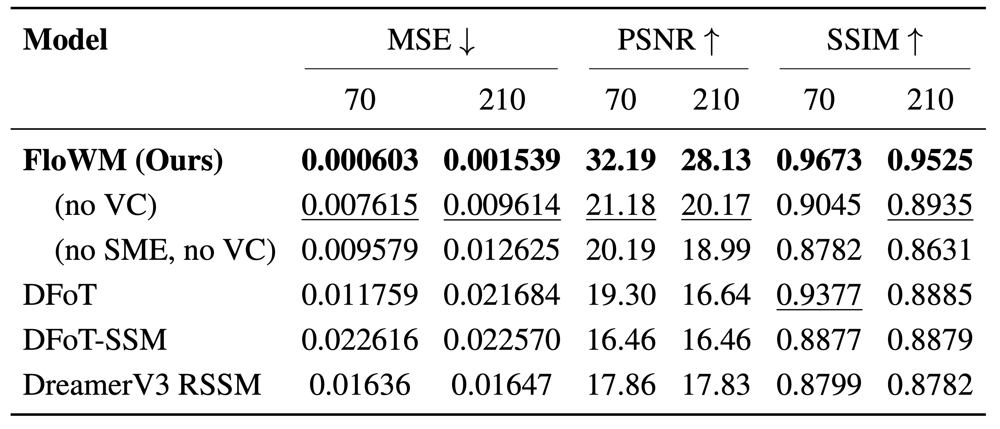
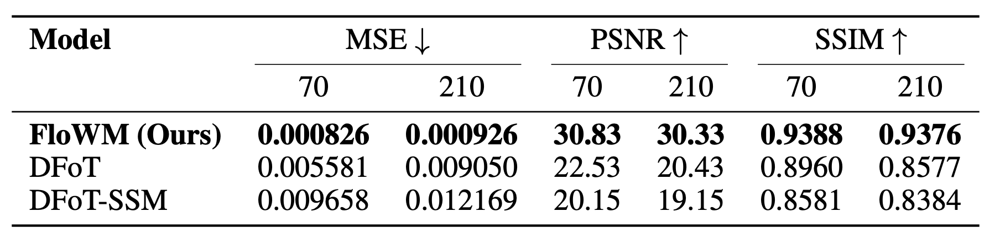
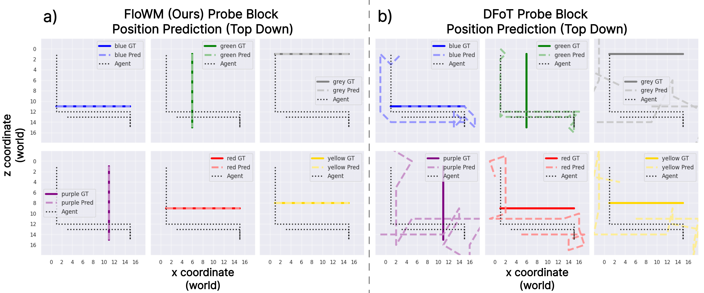
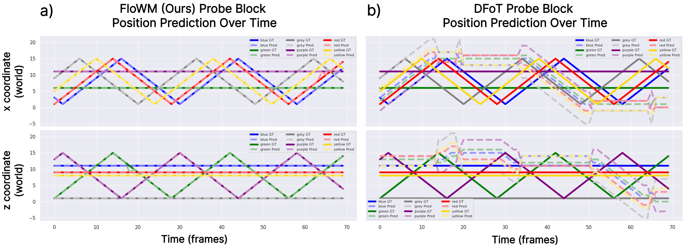
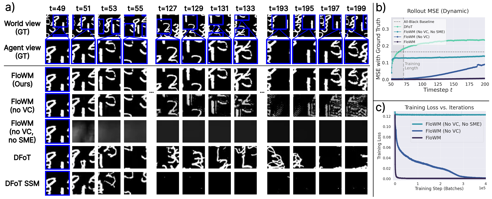
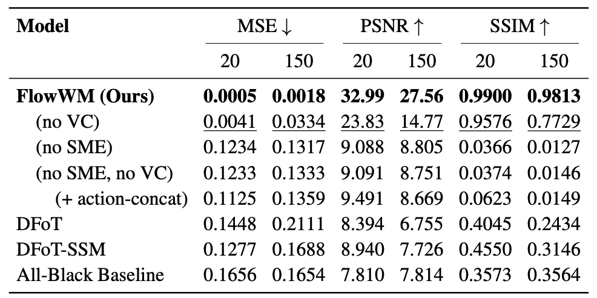

Flow Equivariant World Models: Memory for Partially Observed Dynamic Environments
ICML 2026
 1
Harvard University
1
Harvard University
 2
UC San Diego
1
Harvard University
2
UC San Diego
2
UC San Diego
1
Harvard University
2
UC San Diego
Embodied systems experience the world as 'a symphony of flows': a combination of many continuous streams of sensory input coupled to self-motion, interwoven with the dynamics of external objects. These sensory streams and the underlying dynamics of the world obey smooth, time-parameterized symmetries which existing world models ignore. Without a memory that respects this structure, partial observability presents a major obstacle to existing methods: each observation reveals only a fraction of the world, while unobserved regions continue to evolve.
In this work, we introduce Flow Equivariant World Modeling, a framework that leverages time-parameterized symmetries within a latent memory for stable and accurate dynamics prediction over long horizons. The latent memory shifts and transforms equivariantly with self-motion and inferred external object motion, keeping information about out-of-view regions aligned as time progresses. We demonstrate the advantage of this framework over state-of-the-art diffusion, memory-augmented, and recurrent world model architectures on 2D and 3D partially observed video world modeling benchmarks. More broadly, our results suggest that predictive representations become more powerful when they are organized in line with the temporal and dynamical structure of the world they model.
Below, we overview the FloWM model comparison, the 3D FloWM model, present 3D Blockworld results, and 2D MNIST World results.
Comparison between different world modeling frameworks: a) Standard diffusion forcing uses a fixed length sliding window to generate video autoregressively. Frames must be evicted if they exceed the window. b) When there are information dependencies between past observations and the generated frame, without a memory mechanism, DFoT is not able to generate consistently. c) Existing memory solutions are view-dependent, and cannot handle dynamic scenes, still resulting in inconsistent generation. d) In FloWM, past frames are remembered in the spatial latent memory and continually updated through FloWM's internal dynamics, resulting in consistent generation.

TODO: Add text block about equivariance.
a) FloWM Recurrence relation in 2D. Velocity channels are plotted as rows. At each timestep, the internal flow and action flow compose and act upon the latent memory map representation, which is used to predict the observation at the next timestep. b) Rollout error over time, for FloWM and ablations, and baselines. c) Training loss across batches, demonstrating how the full equivariance allows the model to learn significantly quicker.

FloWM Recurrence relation in 3D: a) Information passes from the image observations to the hidden state through a ViT encoder. b) The new updates are combined with the existing hidden state, and the action and internal flows roll the hidden state to the next timestep. c) The updated hidden state is used to predict the next timestep observation.

Below we provide full rollouts on the Dynamic, Textured, and Static splits of the 3D Blockworld Dataset.
We visualize failure cases of our model, in comparison to DFoT and DFoT SSM by visualizing low PSNR rollouts:


Validation Metrics on 3D Dynamic Block World

Columns show mean metrics (MSE, PSNR, SSIM) of generated frames over the first 70 frames (matches training distribution) vs. 210 frames (length generalization). 70 frames are passed in as context.
Validation Metrics on 3D Dynamic Textured Block World

Columns show mean metrics (MSE, PSNR, SSIM) of 70 generated frames vs 210 frames, with 70 frames passed in as context.
TODO: Add text block about planning expt.
We train simple probe models on the activation spaces of FloWM and baselines on Dynamic Block World to see whether the representation readiliy contains the position of each block at each timestep. a) FloWM can make practically perfect predictions, even while the agent is moving around and the blocks are moving. This demonstrates the accuracy of the learned latent space. b) The DFoT baseline makes sporadic predictions of each of the blocks, demonstrating its unprincipled representation space.

The same example rollout of predicted spatial positions by the probe models in Dynamic Block World is visualized here as a prediction through time. a) FloWM can make predictions accurately through time, while b) DFoT cannot.

We find that the probe can accurately predict the correct block position ~96% of the time for FloWM, while the accuracy prediction of the probe is less than 1% for DFoT. Further, the L2 distance between predicted positions, which can be seen as a proxy for testing whether the FloWM model has learned to be flow equivariant, is significantly lower (0.22) for FloWM, while remaining high for DFoT (2.36, much better than an untrained model at 6.96, but significantly worse than FloWM). See the paper for more details!
Below we provide full rollouts on the Dynamic Partially observed, Static partially observed, and dynamic fully observed splits of the 2D MNIST World Dataset.
* Since the world has no velocity, the velocity channels are redundant and only add noise in this case.
* For fully observable cases, the World View (GT) is same as Agent View (GT).

Validation Metrics on 2D Dynamic Partially Observable MNIST World

Columns show mean metrics (MSE, PSNR, SSIM) of frames over the first 20 generated frames (matches training distribution) vs. 150 generated frames (length generalization). 50 frames are passed in as context.
@misc{lillemark2026flowequivariantworldmodels,
title={Flow Equivariant World Models: Memory for Partially Observed Dynamic Environments},
author={Hansen Jin Lillemark and Benhao Huang and Fangneng Zhan and Yilun Du and Thomas Anderson Keller},
year={2026},
eprint={2601.01075},
archivePrefix={arXiv},
primaryClass={cs.LG},
url={https://arxiv.org/abs/2601.01075},
}